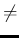
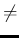
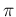

The phonon code ph.x calculates normal modes at a given q-vector,
starting from data files produced by pw.x with a simple SCF calculation.
NOTE: the alternative procedure in which a band-structure calculation
with calculation='phonon' was performed as an intermediate step is no
longer implemented since version 4.1. It is also no longer needed to
specify lnscf=.true. for
  0.
 0.
The output data files appear in the directory specified by the variable outdir, with names specified by the variable prefix. After the output file(s) has been produced (do not remove any of the files, unless you know which are used and which are not), you can run ph.x.
The first input line of ph.x is a job identifier. At the second line the namelist &INPUTPH starts. The meaning of the variables in the namelist (most of them having a default value) is described in file Doc/INPUT_PH.*. Variables outdir and prefix must be the same as in the input data of pw.x. Presently you can specify amass(i) (a real variable) the atomic mass of atomic type i or you can use the default one deduced from the periodic table on the basis of the element name. If amass(i) is not given as input of ph.x, the one given as input in pw.x is used. When this is 0 the default one is used.
After the namelist you must specify the q-vector of the phonon mode, in Cartesian coordinates and in units of 2/a.
Notice that the dynamical matrix calculated by ph.x at  = 0 does not
contain the non-analytic term occurring in polar materials, i.e. there is no
LO-TO splitting in insulators. Moreover no Acoustic Sum Rule (ASR) is
applied. In order to have the complete dynamical matrix at
= 0 does not
contain the non-analytic term occurring in polar materials, i.e. there is no
LO-TO splitting in insulators. Moreover no Acoustic Sum Rule (ASR) is
applied. In order to have the complete dynamical matrix at  = 0
including the non-analytic terms, you need to calculate effective charges
by specifying option epsil=.true. to ph.x. This is however not
possible (because not physical!) for metals (i.e. any system subject to
a broadening).
= 0
including the non-analytic terms, you need to calculate effective charges
by specifying option epsil=.true. to ph.x. This is however not
possible (because not physical!) for metals (i.e. any system subject to
a broadening).
At  = 0, use program dynmat.x to calculate the correct LO-TO
splitting, IR cross sections, and to impose various forms of ASR.
If ph.x was instructed to calculate Raman coefficients,
dynmat.x will also calculate Raman cross sections
for a typical experimental setup.
Input documentation in the header of PHonon/PH/dynmat.f90.
= 0, use program dynmat.x to calculate the correct LO-TO
splitting, IR cross sections, and to impose various forms of ASR.
If ph.x was instructed to calculate Raman coefficients,
dynmat.x will also calculate Raman cross sections
for a typical experimental setup.
Input documentation in the header of PHonon/PH/dynmat.f90.
See Example 01 for a simple phonon calculations in Si, Example 06 for fully-relativistic calculations (LDA) on Pt, Example 07 for fully-relativistic GGA calculations.